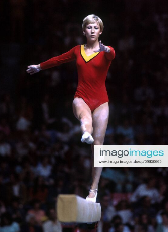

Uta Schorn (FRG)
1973 European VT Bronze Medalist
1972 and 1976 Olympian

Uta was born on August 7, 1957, in Cologne, and trained at the Bayer Leverkusen club. She was the best female gymnast from western Europe in the early 1970s.
Competition
Results
1971
European Championships: 8th AA
World Cup: 5th AA
1972
FRG-BUL-SUI Meet: 1st Team, 1st AA
FRG-POL Dual Meet: 1st Team, 1st AA
FRG-USSR-CAN Meet: 2nd Team, 6th AA
Olympic Games: 8th Team, 23rd AA
1973
European Championships: 6th AA, 3rd VT
FRG-ROM Dual Meet: 2nd Team, 1st AA
London International: 4th AA
Paris Grand Prix: 3rd AA
TV Wattenschied-USSR Dual Meet: 2nd Team, 1st AA
1974
World Championships: 8th Team, 23rd AA
1975
European Championships: 16th AA
USA-FRG Dual Meet: 2nd Team, 12th AA
1976
Olympic Games: 7th Team, 38th AA (prelims)
ROM-FRG Dual Meet: 2nd Team, 10th AA
SUI-FRG Dual Meet: 1st Team, 4th AA
This page was created on August 17, 2020.
© Gymn Forum